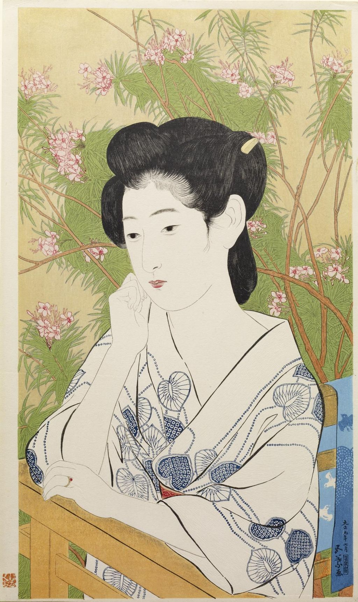

<head>
<meta charset="UTF-8" />
<meta name="keywords" content="drawing, painting" />
<meta name="description" content="drawings by Sunjy" />
<title>Sunjy</title>
<link rel="shortcut icon" type="image/x-icon" href="../../mImages/mCommon/favicon.ico" media="screen" />
<link rel="stylesheet" type="text/css" href="../../mCsses/mCommon/mCssA.css" />
<link rel="stylesheet" type="text/css" href="../../mCsses/mCommon/mCssB.css" />
<link rel="stylesheet" type="text/css" href="../../mCsses/mCommon/mCssC.css" />
<link rel="stylesheet" type="text/css" href="../../mCsses/mCommon/mCssD.css" />
<link rel="stylesheet" type="text/css" href="../../mCsses/mContent/mCssA.css" />
<link rel="stylesheet" type="text/css" href="../../mCsses/mContent/mCssB.css" />
<link rel="stylesheet" type="text/css" href="../../mCsses/mContent/mCssC.css" />
<link rel="stylesheet" type="text/css" href="../../mCsses/mContent/mCssD.css" />
</head>
<script type="text/javascript" src="../../mScripts/mContent/mContentAA.js" /></script>
<script type="text/javascript" src="../../mScripts/mContent/mContentAB.js" /></script>
<script type="text/javascript" src="../../mScripts/mContent/mContentAC.js" /></script>
<script type="text/javascript" src="../../mScripts/mContent/mContentAD.js" /></script>
<script type="text/javascript"></script> 
<script type="text/javascript">
document.write('<div class="mImgAbsolute"></div>');
/*
document.write('<p class="mFontSizeBColor" />From a white paper...</p>');
document.write('<table class="center"><tr><td>');
document.write('');
document.write('</td></tr></table>');
*/
</script>


<script type="text/javascript">
document.write('<p class="mFontSizeBColor" />“Hotspring Hotel” – “Onsen yado” </p>');
document.write('<p class="mFontSizeSColor" />“Hotspring Hotel” – “Onsen yado” by Goyō Hashiguchi is a color woodblock print, from 1920’s Japan. Goyo had a late call to the traditional woodblock print after a career of illustration in other media. The extraordinary beauty and technical excellence have made his prints among the most sought-after Japanese prints.<br><br><br>Woodblock printing in Japan<br><br>Woodblock printing in Japan is a genre of Japanese art that flourished from the 17th through the 19th centuries. Prints from the 20th evolved from the earlier movements, especially with the movement’s emphasis on individual expression. Artists such as Goyō Hashiguchi brought more modern sensibilities to images of women<br><br>The first woodblock printing dated to around 650 AD when the Chinese began printing on paper using wooden blocks. Woodblock printing was used in China for centuries to print books, long before the invention of movable type in Europe. In Japan, woodblock printing for artworks was widely adopted during the Edo period (1603–1868). Although similar to woodcuts in Western printmaking in some regards, the Japanese technique differed in that it used water-based inks, as opposed to western woodcuts, which often uses oil-based inks. The Japanese water-based inks provide a wide range of vivid colors, glazes, and transparency.<br><br>To create a woodblock print, the first step was for an image to drawn onto thin Japanese paper then glued face-down onto a plank of close-grained wood. Oil was then used to make the lines of the image visible. An incision was made along both sides of each line. Wood was then chiseled away, based on the drawing outlines. The block was inked using brushes. A flat hand-held tool was used to press the paper against the inked woodblock to apply the ink to the paper. The first prints were merely a single color, with additional colors applied by hand. The introduction of multiple colors that had to be used with precision over previous ink layers.<br><br><br>Woodblock Printing<br><br>Before the invention of woodblock printing, seals and stamps were used for making impressions. The oldest of these seals came from Mesopotamia and Egypt. The use of round “cylinder seals” for rolling an impress onto clay tablets goes back to early Mesopotamian civilization before 3000 BC. A few larger brick stamps for marking clay bricks survive from Akkad from around 2270 BC. However, none of these used ink, which is necessary for printing.<br><br>The earliest woodblock color printing known is Chinese silk from 206 BC–220 AD printed in three colors. Color is prevalent in Asian woodblock printing on paper. The earliest dated printed book with more than two colors is a book printed in 1606, and the technique reached its height in books on art published in the first half of the 17th century. In Japan, a multi-color method spread more widely and was used for prints from the 1760s on.<br><br>In Japan, woodblock printing came to define the national aesthetic. These techniques became important to Japanese artists, and printed images became among the most celebrated famous works. The aesthetics of modern-day manga and anime are directly descended from woodblock prints.<br></p>');
document.write('<table class="center" /><tr><td>');
document.write('<br><br>Woodblock printing in Japan<br><br>Woodblock printing in Japan is a genre of Japanese art that flourished from the 17th through the 19th centuries. Prints from the 20th evolved from the earlier movements, especially with the movement’s emphasis on individual expression. Artists such as Goyō Hashiguchi brought more modern sensibilities to images of women<br><br>The first woodblock printing dated to around 650 AD when the Chinese began printing on paper using wooden blocks. Woodblock printing was used in China for centuries to print books, long before the invention of movable type in Europe. In Japan, woodblock printing for artworks was widely adopted during the Edo period (1603–1868). Although similar to woodcuts in Western printmaking in some regards, the Japanese technique differed in that it used water-based inks, as opposed to western woodcuts, which often uses oil-based inks. The Japanese water-based inks provide a wide range of vivid colors, glazes, and transparency.<br><br>To create a woodblock print, the first step was for an image to drawn onto thin Japanese paper then glued face-down onto a plank of close-grained wood. Oil was then used to make the lines of the image visible. An incision was made along both sides of each line. Wood was then chiseled away, based on the drawing outlines. The block was inked using brushes. A flat hand-held tool was used to press the paper against the inked woodblock to apply the ink to the paper. The first prints were merely a single color, with additional colors applied by hand. The introduction of multiple colors that had to be used with precision over previous ink layers.<br><br><br>Woodblock Printing<br><br>Before the invention of woodblock printing, seals and stamps were used for making impressions. The oldest of these seals came from Mesopotamia and Egypt. The use of round “cylinder seals” for rolling an impress onto clay tablets goes back to early Mesopotamian civilization before 3000 BC. A few larger brick stamps for marking clay bricks survive from Akkad from around 2270 BC. However, none of these used ink, which is necessary for printing.<br><br>The earliest woodblock color printing known is Chinese silk from 206 BC–220 AD printed in three colors. Color is prevalent in Asian woodblock printing on paper. The earliest dated printed book with more than two colors is a book printed in 1606, and the technique reached its height in books on art published in the first half of the 17th century. In Japan, a multi-color method spread more widely and was used for prints from the 1760s on.<br><br>In Japan, woodblock printing came to define the national aesthetic. These techniques became important to Japanese artists, and printed images became among the most celebrated famous works. The aesthetics of modern-day manga and anime are directly descended from woodblock prints.<br>" />');
document.write('</td></tr></table>');
</script>


